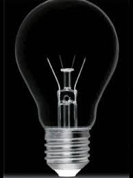

Hi... introduce me Jamil.. here are some bios from me
What Can JavaScript Do?
JavaScript dapat mengubah nilai atribut HTML.
Dalam hal ini JavaScript mengubah nilai atribut src (sumber) dari sebuah gambar.

JavaScript can change HTML content...
What is Jamil's full name?
When is Jamil's birthday?
What major is he?
Where does he live?
Menyembunyikan elemen HTML dapat dilakukan dengan mengubah displaygaya:
Nama Ibu Saya : SUMARNI
Kunci Jawaban
Apa itu javascript?
Click Untuk melihat jawaban
Javascript adalah bahasa pemrograman yang pada tahap awal dirancang untuk berjalan di atas browser. Seiring perkembangan, javascript tidak hanya berjalan di atas browser saja (Client Side). Javascript juga dapat digunakan pada sisi Server, Game, IoT, Desktop, dan lain sebagainya.
Javascript pada awalnya bernama Mocha, lalu berubah menjadi LiveScript saat browser Netscape Navigator 2.0 rilis versi beta (September 1995). Namun, setelah itu dinamai ulang menjadi Javascript. Terinspirasi dari kesuksesan Javascript, Microsoft mengadopsi teknologi serupa. Microsoft membuat ‘Javascript’ versi sendiri bernama Jscript dan di tanam pada Internet Explorer 3.0, ini mengakibatkan ‘Perang Browser’, karena JScript milik Microsoft berbeda dengan Javascript racikan Netscape. Akhirnya pada tahun International. Sehingga lahirlah standarisasi kode Javascript bernama ECMAScript atau ES. Saat ini ECMAScript sudah mencapai versi 8 (ES8).